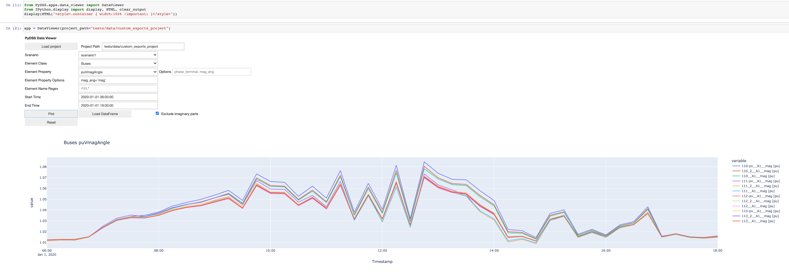

Tutorial¶
This page describes how to run simulations with PyDSS. If you have not already installed PyDSS, please follow the instructions at Installation.
Create a project¶
PyDSS requires a specific directory structure with configuration files that specify how to run a simulation. Run this command to create an empty project:
$ pydss create-project --project=my-project --scenarios="scenario1,scenario2" --path=./pydss-projects
Refer to pydss create-project --help to see additional options.
Next, configure the project.
Copy OpenDSS files to
<project-name>/DSSfiles.Customize the simulation settings in
<project-name>/simulation.toml.Set the field
dss_fileinsimulation.tomlto the OpenDSS entry point filename (e.g., Master.dss).Set
"Use Controller Registry" = truein<project-name>/simulation.tomlin order to use the simplified controller management feature.Add controllers to your local registry as needed. Refer to
pydss controllers --help.Assign element names to controllers. This example will add all PVSystems defined in an OpenDSS input file to the default Volt-Var PvController.
pydss edit-scenario -p ./project -s scenario1 update-controllers -t PvController -f ./project/DSSfiles/PVGenerators_existing_VV.dss -c volt-varCustomize the plots settings in
<project-name>/Scenarios/<scenario-name>/pyPlotList.Customize data to be exported for each scenario in
<project-name>/Scenarios/<scenario-name>/ExportLists
Refer to PyDSS Project Layout for more information about the project layout.
Exporting Data¶
Customize data export for all scenarios with the simulation settings described in ExportsModel.
Pre-filtering Export Data¶
There are several options to limit the amount of data exported. These can be
set in each scenario’s Exports.toml on a per-property basis.
Set
names = ["name1", "name2", "name3"]to only export data for these element names. By default PyDSS exports data for all elements.Set
name_regexes = ["foo.*", "bar\\d+"]to only export data for elements with names that match one of the listed Python regular expressions. Note that backslashes must be escaped.Set
limits = [min, max]to pre-filter values that are inside or outside this range.minandmaxmust be the same type. Refer tolimits_filter.Set
limits_filtertooutside(default) orinside. Applies to filtering action on thelimitsparameter.Set
store_values_typeto"all"(default),"moving_average", or"sum". Ifmoving_averagethen PyDSS will store the average of the lastwindow_sizevalues. Ifsumthen PyDSS will keep a running sum of values at each time point and only record the total to disk.Set
window_sizeto an integer to control the moving average window size. Defaults to100.Set
moving_average_store_intervalto control how often the moving average is recorded. Defaults towindow_size.Set
sample_intervalto control how often PyDSS reads new values. Defaults to1.If the export key is not
ElementType.Propertybut instead a value mapped to a custom function then PyDSS will run that function at each time point.Line.LoadingPercentis an example. In this case PyDSS will read multiple values for a line, compute a loading percentage, and store that. Thelimitsfield can be applied to these values. Refer toCUSTOM_FUNCTIONSinpydss/export_list_reader.pyto see the options available.Set
sum_group_file = file_pathwhere file_path is a JSON or TOML file relative to the directory from which you will run PyDSS. The contents of the file should look like this example:{ "sum_groups": [ { "name": "group1", "elements": [ "element1", "element2" ] }, { "name": "group2", "elements": [ "element3", "element4" ] } ] }
This will export sums of a value aggregated by element name. Set
store_values_typetoallto collect group values at every time point. Set it tosumto collect a running sum for each group.Alternate to
sum_groups_file: Setsum_groupsto the contents of the example above.
Run a project¶
Run this command to run all scenarios in the project.
pydss run <path-to-project>
Analyze results¶
Exported CSV files¶
If Export Data Tables is set to true then the raw output is written to CSV
files in <project-path>/<project-name>/Exports/<scenario-name>. These can be
converted to pandas DataFrames.
Data Viewer¶
PyDSS includes a Jupyter notebook UI that allows you to plot element results.
Note that you must be in the directory where you ran
pydss run <my-project> when you start the notebook.
Note
plotly is required for this application. You may ned to pip install plotly.
$ jupyter notebook
Create a new Python notebook and add this to to the first cell:
from pydss.apps.data_viewer import DataViewer
from IPython.display import display, HTML, clear_output
display(HTML("<style>.container { width:100% !important; }</style>"))
Add this to the second cell:
app = DataViewer(project_path="<my-project>")
The notebook will present some widgets that allow you to choose exported element properties
and plot the resulting DataFrames. The currently-selected DataFrame is available in the property
app.df, and so you can customize your own plots or perform other actions in new notebook cells.
Here is an example plot of a time-series simulation that exported Bus voltages with Buses.puVmagAngle. Note that only the magnitude is plotted and the buses are filtered with a Python regular expression.

Access results programmatically¶
You can also access the results programmatically as shown in the following example code.
Load element classes and properties¶
from pydss.pydss_results import PyDssResults
path = "."
results = PyDssResults(path)
scenario = results.scenarios[0]
# Show the element classes and properties for which data was collected.
for elem_class in scenario.list_element_classes():
for prop in scenario.list_element_properties(elem_class):
for name in scenario.list_element_names(elem_class, prop):
print(elem_class, prop, name)
Read a dataframe for one element¶
df = scenario.get_dataframe("Lines", "Currents", "Line.pvl_112")
df.head()
Line.pvl_112__A1 [Amps] Line.pvl_112__A2 [Amps]
timestamp
2017-01-01 00:15:00 (3.5710399970412254e-08+1.3782673590867489e-05j) (-3.637978807091713e-12+1.1368683772161603e-13j)
2017-01-01 00:30:00 (3.3905962482094765e-08+1.3793145967611053e-05j) 1.1368683772161603e-13j
2017-01-01 00:45:00 (3.381501301191747e-08+1.3786106705993006e-05j) (-3.637978807091713e-12+0j)
2017-01-01 01:00:00 (3.4120603231713176e-08+1.3804576042275585e-05j) (3.637978807091713e-12+1.1368683772161603e-13j)
2017-01-01 01:15:00 (3.356035449542105e-08+1.3810414088766265e-05j) (-3.637978807091713e-12+1.1368683772161603e-13j)
Read a dataframe for one element with a specific option¶
Some element properties contain multiple values. For example, the OpenDSS
CktElement objects report Currents into each phase/terminal.
Here is how you can get the data for a single phase/terminal:
df = scenario.get_dataframe("Lines", "Currents", "Line.pvl_112", phase_terminal="A1")
df.head()
Line.pvl_112__Currents__A1 [Amps]
timestamp
2017-01-01 00:15:00 (3.5710399970412254e-08+1.3782673590867489e-05j)
2017-01-01 00:30:00 (3.3905962482094765e-08+1.3793145967611053e-05j)
2017-01-01 00:45:00 (3.381501301191747e-08+1.3786106705993006e-05j)
2017-01-01 01:00:00 (3.4120603231713176e-08+1.3804576042275585e-05j)
2017-01-01 01:15:00 (3.356035449542105e-08+1.3810414088766265e-05j)
df = scenario.get_dataframe("Lines", "CurrentsMagAng", "Line.pvl_112", phase_terminal="A1", mag_ang="mag")
df.head()
Line.sw0__A1__mag [Amps]
timestamp
2017-01-01 00:15:00 6.469528
2017-01-01 00:30:00 6.474451
2017-01-01 00:45:00 6.461993
2017-01-01 01:00:00 6.384335
2017-01-01 01:15:00 6.347553
Read a dataframe for one element with an option matching a regular expression¶
import re
# Get data for all phases but only terminal 1.
regex = re.compile(r"[ABCN]1")
df = scenario.get_dataframe("Lines", "Currents", "Line.pvl_112", phase_terminal=regex)
df.head()
Line.pvl_112__Currents__A1 [Amps]
timestamp
2017-01-01 00:15:00 (3.5710399970412254e-08+1.3782673590867489e-05j)
2017-01-01 00:30:00 (3.3905962482094765e-08+1.3793145967611053e-05j)
2017-01-01 00:45:00 (3.381501301191747e-08+1.3786106705993006e-05j)
2017-01-01 01:00:00 (3.4120603231713176e-08+1.3804576042275585e-05j)
2017-01-01 01:15:00 (3.356035449542105e-08+1.3810414088766265e-05j)
Read the total value for a property stored with store_values_type = "sum"¶
scenario.get_element_property_sum("Circuit", "LossesSum", "Circuit.heco19021")
(48337.88149479975+14128.296734762534j)
Find out all options available for a property¶
scenario.list_element_property_options("Lines", "Currents")
["phase_terminal"]
scenario.list_element_property_options("Lines", "CurrentsMagAng")
['phase_terminal', 'mag_ang']
scenario.list_element_property_options("Lines", "NormalAmps")
[]
Find out what option values are present for a property¶
df = scenario.get_option_values("Lines", "Currents", "Line.pvl_112")
["A1", "A2"]
Read a dataframe for all elements¶
You may want to get data for all elements at once.
df = scenario.get_full_dataframe("Lines", "Currents")
Performance Considerations¶
If your dataset is small enough to fit in your system’s memory then you can
load it all into memory by passing in_memory=True to PyDssResults.
Estimate space required by pydss simulation¶
To estimate the storage space required by pydss simulation before compression.
If use pydss CLI, please enable dry_run flag provided in run,
$ pydss run /data/pydss_project --dry-run
Note
Please notice that the space caculated here is just an estimation.
Basically, estimated space = (space required at first step) * nSteps.
Based on test data - 10 days timeseries with 10 sec step resolution (86394 steps), the test results show below:
With compression on
store.h5, the size is3.8 MB.Without compression on
store.h5, the size is403.0 MBEstimated space based first time step, the size is
400.8 MB
Therefore, the compression ratio is 95%. Pretty good!